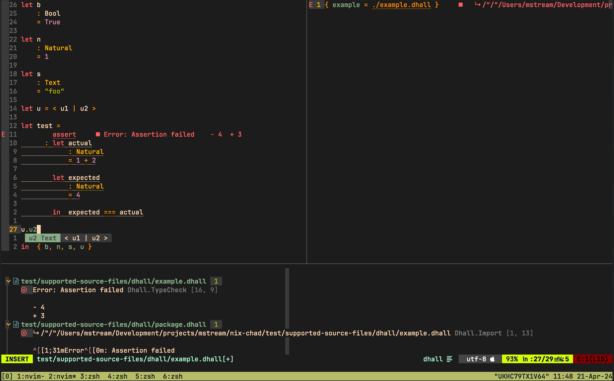

Nix Chad

An opinionated MacOS setup focused on software development.
Features
Neovim
programming/configuration languages support

| language | actions | completion | diagnostics | formatting | highlighting |
|---|---|---|---|---|---|
| bash | ☒ | ☑ | ☑ | ☑ | ☑ |
| dhall | ☒ | ☑ | ☑ | ☑ | ☑ |
| docker | ☒ | ☒ | ☑ | ☒ | ☑ |
| GitHub Actions workflow | ☑ | ☑ | ☑ | ☑ | ☑ |
| html | ☒ | ☑ | ☑ | ☑ | ☑ |
| java | ☒ | ☑ | ☑ | ☑ | ☑ |
| json | ☒ | ☑ | ☑ | ☑ | ☑ |
| javascript | ☑ | ☑ | ☑ | ☑ | ☑ |
| lua | ☑ | ☑ | ☑ | ☑ | ☑ |
| markdown | ☑ | ☑ | ☑ | ☑ | ☑ |
| nix | ☒ | ☑ | ☑ | ☑ | ☑ |
| purescript | ☑ | ☑ | ☑ | ☑ | ☑ |
| python | ☑ | ☑ | ☑ | ☑ | ☑ |
| typescript | ☑ | ☑ | ☑ | ☑ | ☑ |
| yaml | ☑ | ☒ | ☑ | ☑ | ☑ |
discoverable key mappings
After pressing \ key a window enumerating all key mappings appears.
The same windows shows when user starts but does not finish a key
sequence which has some action assigned to it.
Prerequisites
Configuration
Initializing from a template
Run from a directory of your choice:
nix flake init --template github:mstream/nix-chad/main#default
Tweaking
Update any config entries to your liking like in this example.
Applying
After any change to configuration, run from the directory where
flake.nix file resides:
nix run .#switch
Updating
To stay up to date witch changes to Nix Chad, run periodically:
nix flake update
chad.browser.bookmarks
Browser bookmarks. Not supported until there is a nix-native browser for Apple Silicon available.
Type: list of (submodule)
Default:
[ ]
Example:
[
{
title = "Nix Chad";
url = "https://github.com/mstream/nix-chad";
}
]
Declared by:
chad.browser.bookmarks.*.title
Title of the bookmark.
Type: string
Declared by:
chad.browser.bookmarks.*.url
URL of the bookmark.
Type: string
Declared by:
chad.extraPackages
Additional nixpkgs packages to be accessible for the user.
Type: null or (function that evaluates to a(n) list of package)
Default:
null
Example:
pkgs: with pkgs; [ cowsay ];
Declared by:
chad.fontSize
A desired font size in tools that have means to set it fixed.
Type: signed integer
Default:
12
Example:
16
Declared by:
chad.gpg.defaultKey
An ID of a key to be used for GPG signing by default. This is expected to be different for individuals. The key is not part of this repository and has to be provided manually.
Type: null or string
Default:
null
Example:
"BE318F09150F6CB0724FFEC0319EE1D7FC029354"
Declared by:
chad.keyboard.remapCapsLock
Treat Caps Lock key as Escape key.
Type: boolean
Default:
true
Declared by:
chad.keyboard.remapLeftArrow
Treat Left Arrow key as Right Control key.
Type: boolean
Default:
false
Declared by:
chad.manageWindows.enable
Keep windows occupy maximum available share of space on desktop.
Type: boolean
Default:
false
Declared by:
chad.manageWindows.exclusions
List of application names for which automatic window management should not be performed. It can be figured out using this command:
yabai -m query --windows
Type: list of (submodule)
Default:
[ ]
Example:
[
{
app = "^Discord$";
title = ".*Dialog$";
}
]
Declared by:
chad.manageWindows.exclusions.*.app
Regex for application name.
Type: string
Example:
"^Discord$"
Declared by:
chad.manageWindows.exclusions.*.title
Regex for window title.
Type: string
Default:
".*"
Example:
".*Dialog$"
Declared by:
chad.mouse.naturalScrollDirection
Should content scroll opposite to the swipe/roll direction.
Type: boolean
Default:
true
Declared by:
chad.terminal.abbreviations
An attribute set that maps aliases (the top level attribute names in this option) to abbreviations. Abbreviations are expanded with the longer phrase after they are entered.
Type: attribute set of string
Default:
{ }
Example:
{
gco = "git checkout";
l = "less";
}
Declared by:
chad.terminal.keyBindings
Additional key bindings for terminal emulator.
Type: list of (submodule)
Default:
[ ]
Example:
[
{
chars = "\\u000c";
key = "K";
mods = "Control";
}
]
Declared by:
chad.terminal.keyBindings.*.chars
Substitution.
Type: string
Declared by:
chad.terminal.keyBindings.*.key
Key.
Type: string
Declared by:
chad.terminal.keyBindings.*.mods
Modifier key(s).
Type: string
Declared by:
chad.terminal.zshInitExtra
Additional initialization for ZSH sessions.
Type: strings concatenated with “\n”
Default:
""
Example:
''
export VAR1=val1
export VAR2=val2
''
Declared by:
chad.user.homeDirectories
A list of desirect directories to be created in the home directory of the user. It is up to the user to provide the contents of these directories.
Type: list of string
Default:
[ ]
Example:
[
"Development/exercises"
"Development/presentations"
"Development/projects"
]
Declared by:
chad.user.name
User name.
Type: string
Example:
"bob"
Declared by:
Alacritty
NeoVim
Directory Tree
td - Directory tree definitions
tf - Directory tree files
tgb - Directory tree Git branches
tgc - Directory tree Git commits
tgl - Directory tree Git local changes
tgs - Directory tree Git stashed changes
tvb - Directory tree Vim buffers
tvc - Directory tree Vim commands
tvh - Directory tree Vim help topics
tw - Directory tree words across files
Find
fd - Find definitions
ff - Find files
fgb - Find Git branches
fgc - Find Git commits
fgl - Find Git local changes
fgs - Find Git stashed changes
fvb - Find Vim buffers
fvc - Find Vim commands
fvh - Find Vim help topics
fw - Find words across files
Go To
gD - Go to declaration
gd - Go to definition
gi - Go to implementation
g] - Go to next problem
g[ - Go to previous problem
Miscellaneous
<C-j> - Move to window on the bottom
<C-h> - Move to window on the left
<C-l> - Move to window on the right
<C-k> - Move to window on the top
\- Show key mappings
K - Show information about the symbol under the cursor
Refactor
ra - Refactor action
rf - Refactor format
rn - Refactor name
For Developers
Bla bla bla
Nix Chad Library
Darwin related functions
lib.darwin.makeSystem
Create activation scripts for Darwin system with a desired config applied.
Inputs
flakeInputs
: flake inputs containing darwin, home-manager and nur
system
: host system
chadConfig
: nix-chad configuration
Contributors
TODO